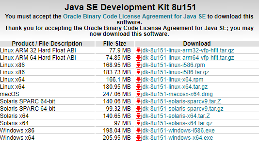
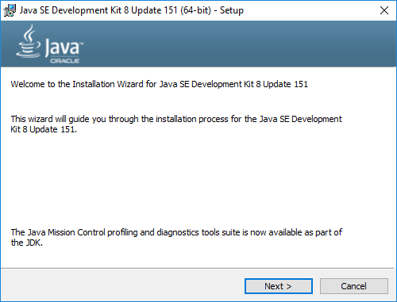
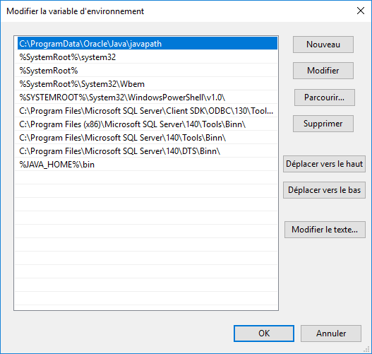
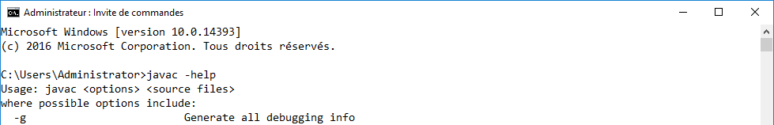

Installation de Java
Démonstration 1 du
module 1
Cette démonstration décrit les principales étapes permettant l’installation de Java
Déroulement
-
Télécharger le Java SE Development Kit 8 (JDK8) sur le site d’Oracle à l’adresse suivante s’il n’est pas fourni :
http://www.oracle.com/technetwork/java/javase/downloads/jdk8-downloads-2133151.html  -
Installer Java à l’aide de l’installateur téléchargé.
Conserver le paramétrage par défaut. Voici les principales étapes :

 -
Tester l’installation en exécutant l’instruction
java -version:
-
Ajouter la variable d’environnement JAVA_HOME :

-
Modifier la variable d’environnement PATH pour ajouter la répertoire
\bindu JDK : -
Tester le paramétrage en exécutant l’instruction
javac -help: